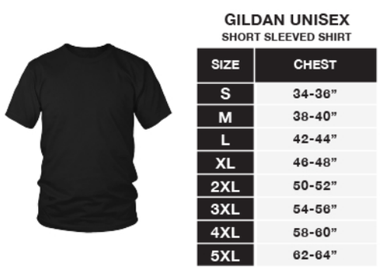

library(foreign)
library(tidyverse)
library(MASS)
a <- read.xport("ARX_F.XPT") # Arthritis data
b <- read.xport("BMX_F.XPT") # Body measurements
d <- read.xport("DEMO_F.XPT") # DemographicsToday I was given a task that sounded pretty straight-forward: What t-shirt size would you send to someone if you don’t know their shirt size, but instead you know their height, weight, and gender?
In fact, it seemed so straight-forward that I was sure there must be prior art out there that I could re-use. A StackOverflow, a mathematical formula, a GitHub repo, a blog post – there had to be something! To my surprise, there wasn’t any, not that I could find anyway.
I guess this is a problem that hasn’t received a lot of attention. Or at least, it’s not the sort of problem that someone in the open source / open science community has tackled.
So I set out to build my own predictive algorithm.
The model and the data
First I would need to model the problem and identify data to build the model. What are the inputs and the outputs? How do the inputs map onto the outputs?
I knew that the only information I’d have to predict shirt sizes from was: gender, height and weight. Sometimes I’d have body mass index (BMI) instead of height and weight.
I also knew that I’d be sending “unisex” t-shirts. I’ve done my share of online t-shirt shopping, so it occurred to me to look at how online clothing stores solve this problem – enter the “size chart”. Okay, so now I’d found a measurement that could be used to classify shirt sizes: chest size.

So now I just had to find a way to get from gender, height, and weight to chest size.
I know from experience that there are several large public datasets that contain health and health-related measurements. One of these is the The National Health and Nutrition Examination Survey (NHANES), which is run by the CDC. I decided to poke around there and see what I could find. I found the variable search tool and started keying in some of these variables: “height”, “weight”, “chest”, “bmi”, “gender”.
Of course they would have gender, height, weight and BMI. It would be a pretty odd health and nutrition study if they didn’t have basic demographics and measurements. But chest measurement? The context seemed a bit odd. What does chest circumference have to do with health and nutrition?
Maybe chest circumference is important if we’re talking about breathing? Eureka! NHANES does have chest measurements for inhalation and exhalation as part of the arthritis datasets!
The final piece of the puzzle was identifying a single year cohort that contained all of these measures together, because I would want the data to be at the level of individual persons. I found all of these measurements were contained in the 2009-2010 cohort, so I downloaded the dataset files for that cohort.

Now my model was complete. I would run a linear regression that predicts chest circumference from gender, height and weight (or bmi). I would train this model on the NHANES data, and I would then use the predicted chest circumference to determine shirt size.
Data wrangling
Read in the data
Of course the data had to be in a SAS format. 🙄
Luckily there’s an R package for reading SAS data files.
These are the variables I’ll pull out from the different dataframes.
- SEQN - Participant ID
- ARXCCIN - Inhale chest circumference in CM
- BMXWT - Weight in KG
- BMXHT - Height in CM
- BMXBMI - Body Mass Index (BMI)
- DMDHRGND - Gender of participant (1 = Male, 2 = Female)
I’m using the inhale chest circumference because I found in some exploratory analyses (not reported here) that it has a stronger correlation to the other measurements. I guess the exhale circumference was more noisy for some reason?
a %>% dplyr::select(id = SEQN, chest_in_cm = ARXCCIN) -> chest_measures
b %>% dplyr::select(id = SEQN, weight_kg = BMXWT, height_cm = BMXHT, bmi = BMXBMI) -> height_weight
d %>% dplyr::select(id = SEQN, gender = DMDHRGND) %>%
mutate(gender = case_when(gender == 1 ~ "M", TRUE ~ "F")) -> gender
# Join datasets and select only the rows that have all measurements
chest_measures %>%
left_join(., height_weight, by = c('id')) %>%
left_join(., gender, by = c('id')) %>%
filter(!is.na(chest_in_cm),
!is.na(height_cm),
!is.na(weight_kg),
!is.na(gender),
!is.na(bmi)) -> dfCorrelations
I’ll check some basic correlations and descriptives. I see that men have larger chests than women, on average. And importantly, BMI does not correlate with chest size as well as weight.
Model building
I decided to build two models because sometimes I know a person’s height and weight but not their BMI, and other times I know their BMI but not their height and weight.
Although I could take all of the heights and weights and convert them into BMIs, I’m guessing this could lead a loss of information. The correlation above suggests that weight is the best predictor of chest size (better than BMI), so that tells me it might be better to use height and weight when it’s available, but use BMI as a fallback when height and weight are not available.
Height and weight model
To build a model, I’ll run a stepwise linear regression to determine the model of best fit. I’ll enter height, weight, and gender as predictors and allow interaction terms. I’ll use AIC (Akaike’s Information Criterion) for model selection, since it penalizes models with added complexity and I want a parsimonious model that doesn’t overfit the data.
I see that the best model includes all terms, including weight*height and weight*gender interaction terms.
lm(data = subset(df, select= c(chest_in_cm, height_cm, weight_kg, gender)),
chest_in_cm ~ .) -> mod
step.model <- stepAIC(mod, direction = "both", trace = TRUE, scope = . ~ .^2)Start: AIC=14857.43
chest_in_cm ~ height_cm + weight_kg + gender
Df Sum of Sq RSS AIC
+ height_cm:weight_kg 1 220 115291 14851
- height_cm 1 2 115513 14856
+ weight_kg:gender 1 89 115421 14856
<none> 115510 14857
+ height_cm:gender 1 7 115503 14859
- gender 1 2052 117563 14937
- weight_kg 1 397116 512627 21725
Step: AIC=14850.64
chest_in_cm ~ height_cm + weight_kg + gender + height_cm:weight_kg
Df Sum of Sq RSS AIC
+ weight_kg:gender 1 144.02 115147 14847
<none> 115291 14851
+ height_cm:gender 1 13.37 115277 14852
- height_cm:weight_kg 1 219.87 115510 14857
- gender 1 2064.63 117355 14930
Step: AIC=14846.88
chest_in_cm ~ height_cm + weight_kg + gender + height_cm:weight_kg +
weight_kg:gender
Df Sum of Sq RSS AIC
<none> 115147 14847
+ height_cm:gender 1 3.499 115143 14849
- weight_kg:gender 1 144.020 115291 14851
- height_cm:weight_kg 1 274.743 115421 14856summary(step.model)
Call:
lm(formula = chest_in_cm ~ height_cm + weight_kg + gender + height_cm:weight_kg +
weight_kg:gender, data = subset(df, select = c(chest_in_cm,
height_cm, weight_kg, gender)))
Residuals:
Min 1Q Median 3Q Max
-21.3179 -3.2347 0.2087 3.4462 15.4911
Coefficients:
Estimate Std. Error t value Pr(>|t|)
(Intercept) 41.491415 4.708485 8.812 < 2e-16 ***
height_cm 0.086786 0.028263 3.071 0.002148 **
weight_kg 0.666925 0.055507 12.015 < 2e-16 ***
genderM -0.030639 0.599462 -0.051 0.959239
height_cm:weight_kg -0.001087 0.000328 -3.314 0.000925 ***
weight_kg:genderM 0.016955 0.007065 2.400 0.016449 *
---
Signif. codes: 0 '***' 0.001 '**' 0.01 '*' 0.05 '.' 0.1 ' ' 1
Residual standard error: 5.001 on 4604 degrees of freedom
Multiple R-squared: 0.8152, Adjusted R-squared: 0.815
F-statistic: 4061 on 5 and 4604 DF, p-value: < 2.2e-16# Save the model for later
height_weight_model <- step.modelBody Mass Index (BMI) model
Now I’ll do the same with BMI and gender.
lm(data = subset(df, select= c(chest_in_cm, bmi, gender)), chest_in_cm ~ .) -> mod
step.model <- stepAIC(mod, direction = "both", trace = TRUE, scope = . ~ .^2)Start: AIC=17986.13
chest_in_cm ~ bmi + gender
Df Sum of Sq RSS AIC
+ bmi:gender 1 725 227076 17973
<none> 227801 17986
- gender 1 11229 239030 18206
- bmi 1 385144 612946 22547
Step: AIC=17973.44
chest_in_cm ~ bmi + gender + bmi:gender
Df Sum of Sq RSS AIC
<none> 227076 17973
- bmi:gender 1 724.73 227801 17986summary(step.model)
Call:
lm(formula = chest_in_cm ~ bmi + gender + bmi:gender, data = subset(df,
select = c(chest_in_cm, bmi, gender)))
Residuals:
Min 1Q Median 3Q Max
-26.7682 -5.0630 0.2613 5.2463 23.2969
Coefficients:
Estimate Std. Error t value Pr(>|t|)
(Intercept) 56.77733 0.66042 85.971 < 2e-16 ***
bmi 1.31235 0.02203 59.573 < 2e-16 ***
genderM -0.34122 0.92789 -0.368 0.713084
bmi:genderM 0.11906 0.03105 3.834 0.000128 ***
---
Signif. codes: 0 '***' 0.001 '**' 0.01 '*' 0.05 '.' 0.1 ' ' 1
Residual standard error: 7.021 on 4606 degrees of freedom
Multiple R-squared: 0.6355, Adjusted R-squared: 0.6353
F-statistic: 2677 on 3 and 4606 DF, p-value: < 2.2e-16# Save the model for later
bmi_model <- step.modelPredicting chest size from height, weight, BMI, and gender
Now that I have the models, I can use them to generate chest size predictions.
Predict chest size given height, weight, and gender
Next we’ll take the final model selected from the above procedure and use it to predict chest circumference, in inches, given height, weight, and gender.
To test the model, I’ll use average values.
Height, weight, and gender
input <- data.frame(height_cm = 168, weight_kg = 83, gender = "F")
# 1 cm = 0.393701 inches
predict(height_weight_model, input) * 0.393701 1
37.90109 BMI and gender
input <- data.frame(bmi = 29, gender = "F")
predict(bmi_model, input) * 0.393701 1
37.33684 Chest size to shirt size
Finally, I’ll need to take the chest size prediction and convert it to a shirt size. Remember the size chart?
For some reason the chart leaves out “XS” and the ranges lso don’t provide full coverage of the possible chest size values (34-36” and then 38-40”???). So I’ll extend the upper bound of each range to meet the lower bound of each size above it. This will cause the predictions to err on the size of larger sizes rather than smaller sizes, which I think is better because if a shirt is too big, at least you can still wear it!
input <- data.frame(height_cm = 168, weight_kg = 83, gender = "F")
data.frame(chest = predict(height_weight_model,input)[[1]] * 0.393701) %>%
mutate(shirt_size = case_when(
chest < 32 ~ "XS",
between(chest, 32, 36) ~ "S",
between(chest, 36, 40) ~ "M",
between(chest, 40, 44) ~ "L",
between(chest, 44, 48) ~ "XL",
between(chest, 48, 52) ~ "2XL",
between(chest, 52, 56) ~ "3XL",
between(chest, 56, 64) ~ "4XL",
chest > 64 ~ "5XL"
)
) chest shirt_size
1 37.90109 MWrapping it up in a function
And finally, I can put it in a function that will select the model to use for me, based on the information it’s been given.
predict_shirt_size <- function(height_cm, weight_kg, bmi, gender){
if(!is.na(height_cm) & !is.na(weight_kg)){
input <- data.frame(height_cm = height_cm, weight_kg = weight_kg, gender = gender)
chest <- predict(height_weight_model, input)[[1]] * 0.393701
} else if(!is.na(bmi)){
input <- data.frame(bmi = bmi, gender = gender)
chest <- predict(bmi_model, input)[[1]] * 0.393701
} else {
# Just in case height, weight, and BMI are all missing
chest <- -99 # A value that gets ignored below
}
shirt_size = case_when(
between(chest, 0, 32) ~ "XS",
between(chest, 32, 36) ~ "S",
between(chest, 36, 40) ~ "M",
between(chest, 40, 44) ~ "L",
between(chest, 44, 48) ~ "XL",
between(chest, 48, 52) ~ "2XL",
between(chest, 52, 56) ~ "3XL",
between(chest, 56, 64) ~ "4XL",
chest > 64 ~ "5XL",
# Defaults in case height, weight, BMI are missing
# but gender is not
gender == "F" ~ "M",
gender == "M" ~ "L",
# Last resort
TRUE ~ "L"
)
return(shirt_size)
}predict_shirt_size(height_cm = 168, weight_kg = 83, gender = "F")[1] "M"